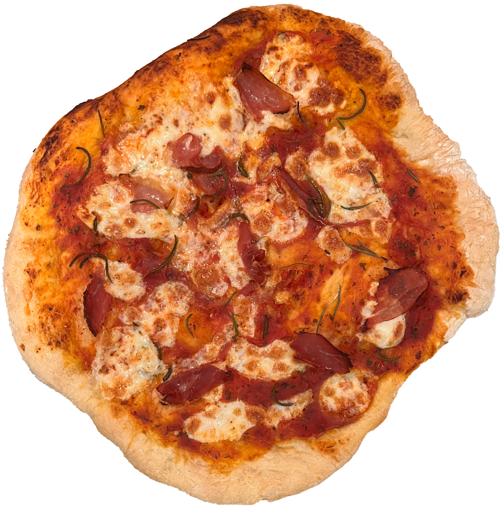
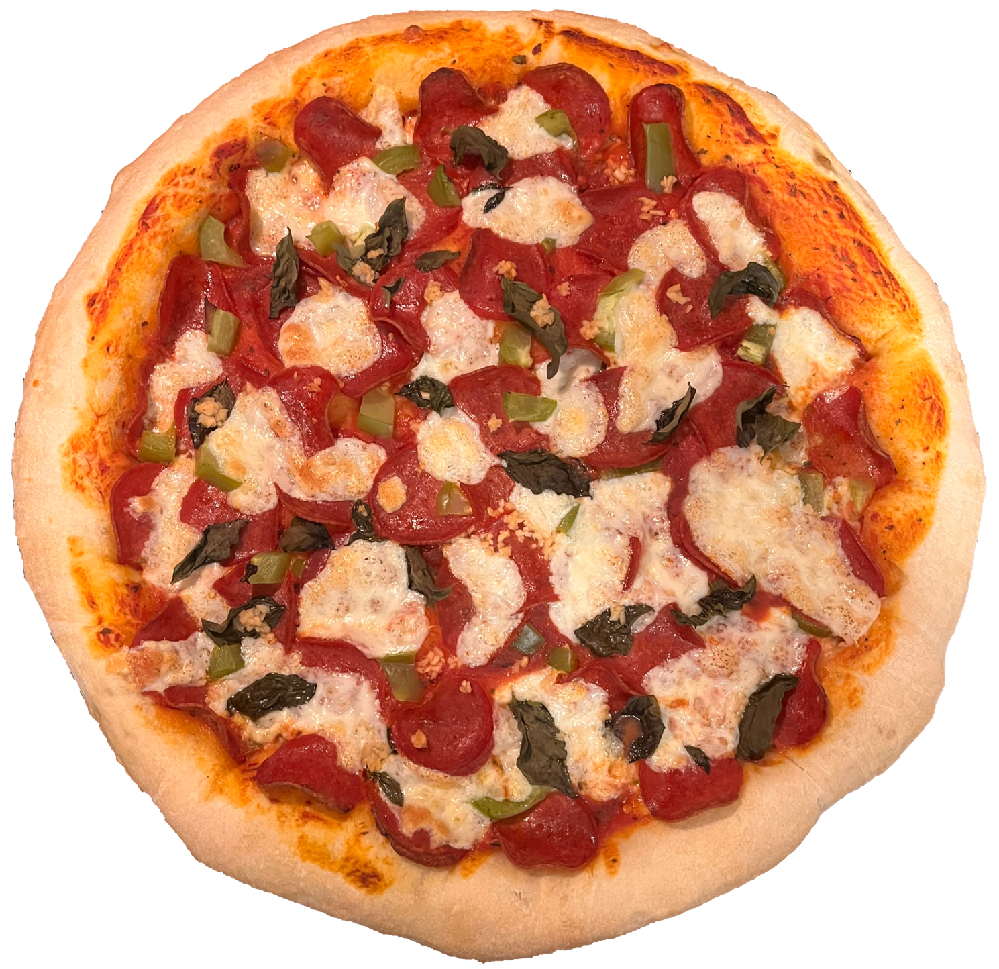

I have been on a roll with these pizzas! This months pizza is a combination of pepperoni, salami & prosciutto. The pizza you see on the very left was made with the good ol' pizza stone, and the other two were bigger ones cooked in a pizza pan. I made these for a conspiracy theory night we had with loved ones, and although they were all extremely delicious pizzas, the pepperoni on the left disapeared quite literally as soon as it cooled down! :-)


A little later this month for Catan night these pizzas were born! Courtesy of my beautiful LOML, we were able to put various fresh greens on these pizzas.
Fresh rosemary, basil & thyme does not compare to store bought dried ones. The flavour is so much deeper, and if you grow them, you can even taste the love. I certainly did!
From left to right, the pizzas are as follows; prosciutto, fresh rosemary & mozzarella, and pepperoni, green peppers (thank you Catan homies for bringing them), fresh basil & mozzarella as well.
If you guess correctly, yes, the wonky looking pizza was cooked on our pizza stone.
Oh! And last little detail before I go, the pizza on the right was my first attempt at a stuffed crust pizza. I stretched the dough a little wider & then folded it back into itself,
placing cheese at the center. If you're wondering why the crust looks so wide, it's because of that. Surprisingly, the consensus was that it needed more cheese!
These were exquisite, loved filled pizzas. With a side of Catan ;)
p.s. - Happy New Year! Make this one your best one yet, I'll be doing the same.

